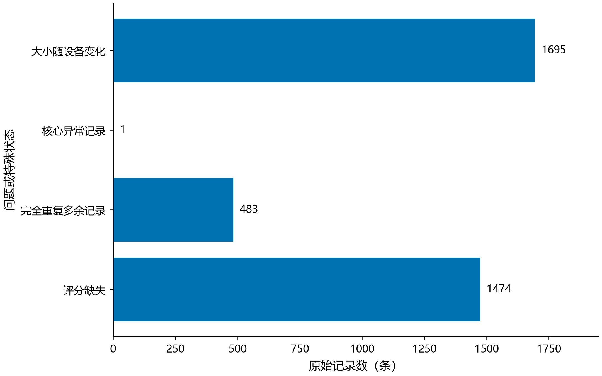
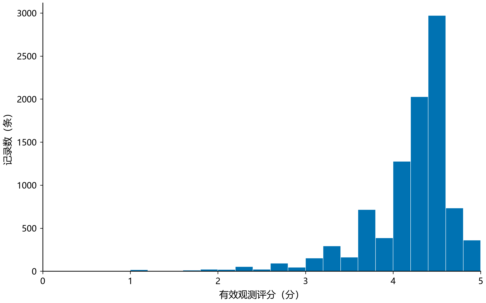
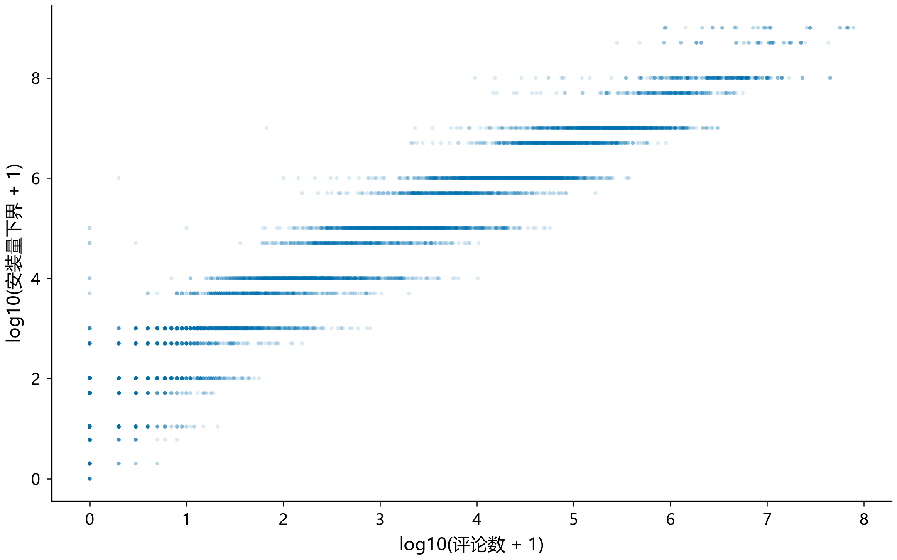
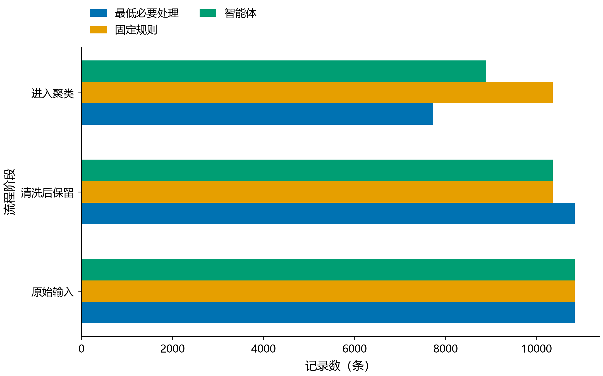
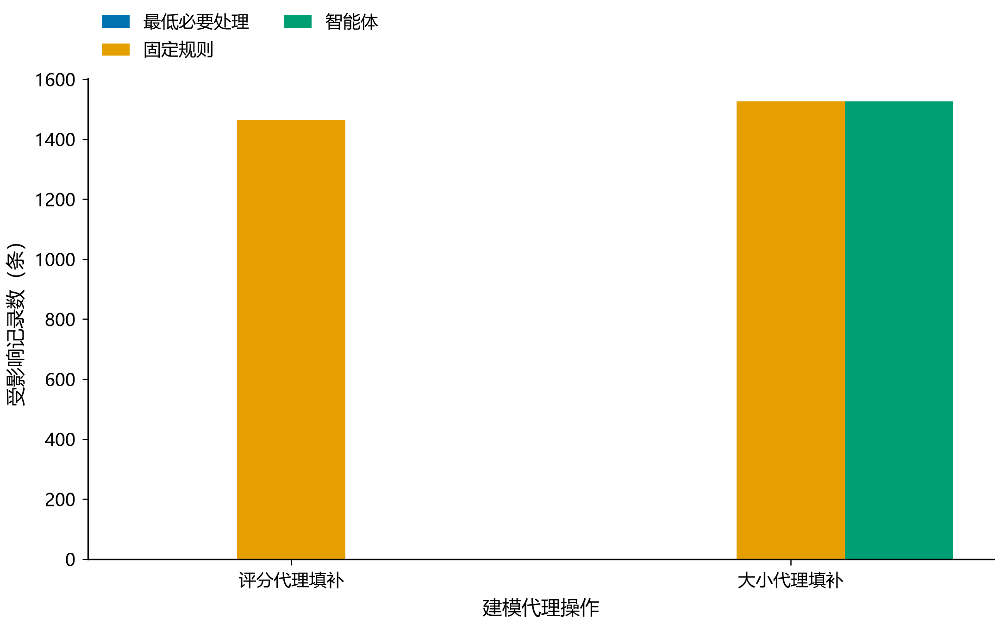
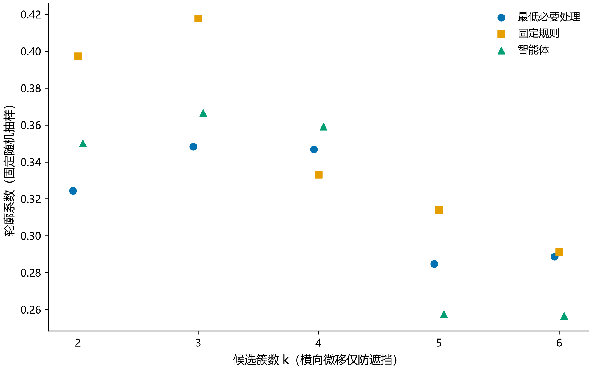
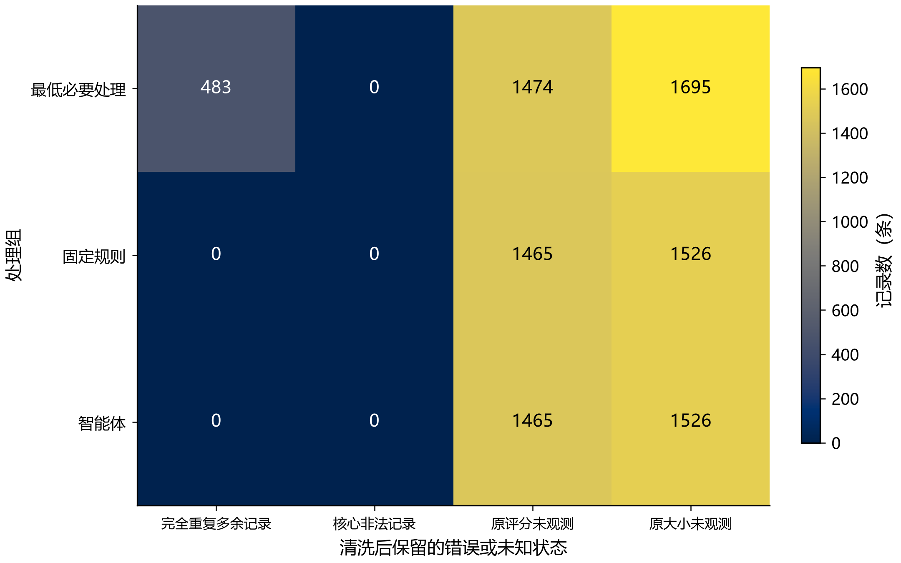
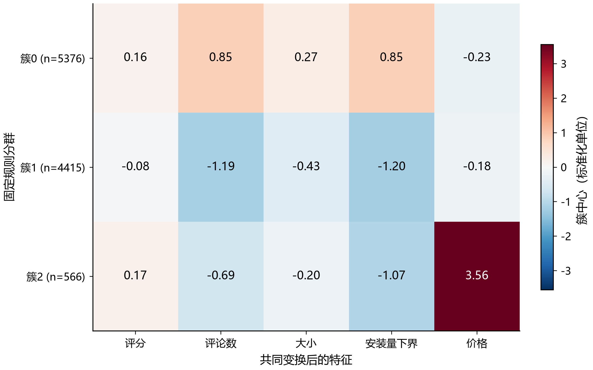
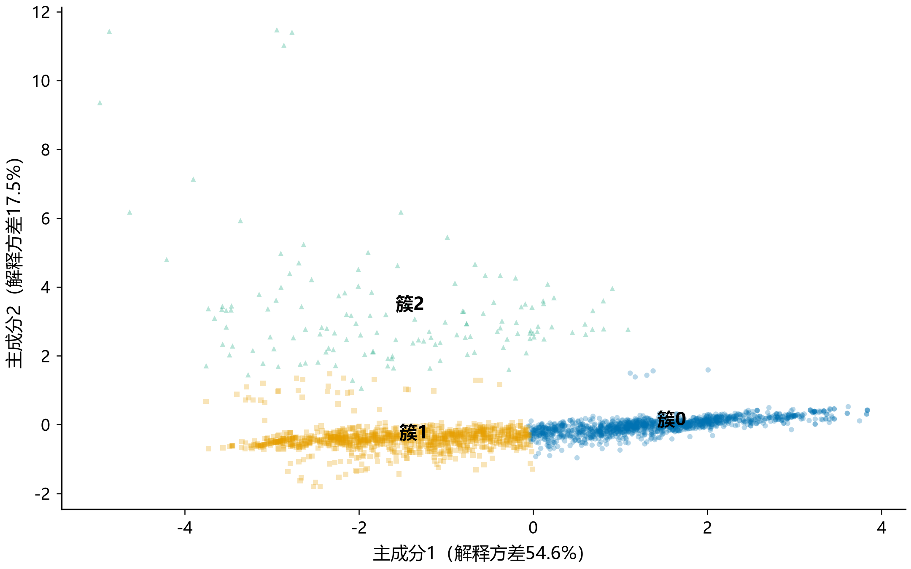

来源为本目录对应运行结果。智能体未运行时不会显示其结果。

原始n=10841；各项可重叠，不应相加；大小随设备变化是特殊状态，不直接等于错误。计数，无误差棒。

n=9366条有效非空评分；排除核心异常；重复保留；未插补；直方图宽0.2分。

n=10840条核心有效记录；重复保留；每点一条记录，无回归或显著性检验；安装量为下界，不作因果解释。

清洗保留数含暂不适合聚类的记录；进入聚类数才是聚类保留率分子。计数，非统计均值。

统计填补操作数；同一记录可能两项均填补；缺失和varies标记保留。计数，无误差棒。

每组k=2至6；种子42，n_init=10；轮廓系数至多1500条固定样本；各组原生样本不同，跨组数值仅作描述。

分母为各组清洗后记录；“原评分/大小未观测”即使填补也仍计数，不代表聚类矩阵有NaN。热图为计数，无显著性推断。

KMeans簇中心为变换空间均值；除评分外先log1p；包含建模代理值，非原单位均值；标签编号无业务排序。

PCA拟合全部固定规则组记录，仅绘制种子42抽取的2500点；颜色和形状表示类别，文字标注簇中心。投影不用于重新聚类，不证明真实类别或因果。